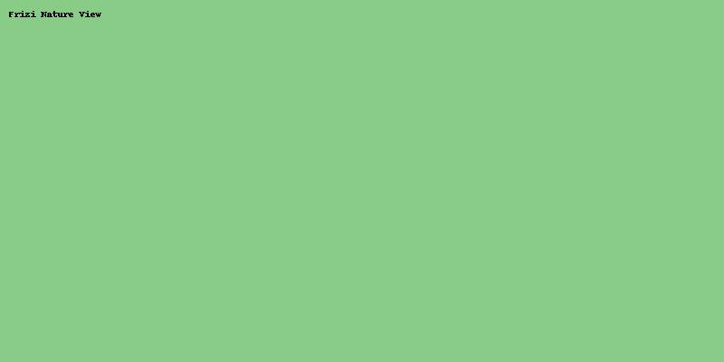
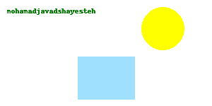

خوش آمدید به روستای فریزی، مقصدی آرام و زیبا در دل طبیعت خراسان رضوی. اینجا میتوانید از مناظر بکر، آبوهوای دلانگیز، و محصولات محلی لذت ببرید.
تصاویر روستا



خوش آمدید به روستای فریزی، مقصدی آرام و زیبا در دل طبیعت خراسان رضوی. اینجا میتوانید از مناظر بکر، آبوهوای دلانگیز، و محصولات محلی لذت ببرید.
